0%
Stackly began as a sketchbook and a borrowed table. Eight years on, it’s a small studio that still starts every piece the same way — by looking.
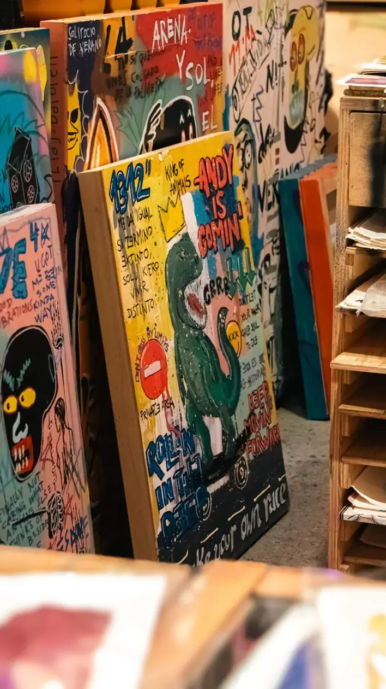
Studio · West Masi StreetThe studio sits above a quiet street in Madurai: a painting wall, a print press, a drawing table and a screen for digital work. Collectors are always welcome — the kettle is always on.
Forty pages of ink studies, a borrowed table and a first sale to a neighbour — the whole studio, at that point.
Collectors across India started following pieces online. The first collector dashboard was a shared spreadsheet.
A second-hand screenprint press made limited editions possible, and the first mural wall followed within the year.
The studio grew to four on purpose — small enough that every collector still talks to the person holding the brush.
The best colour decisions happen after the third cup of tea, not the first glance.
We cap commissions each season so no piece is ever rushed to fit a calendar.
Sketches, failures and half-finished layers are part of the story — collectors see them all.
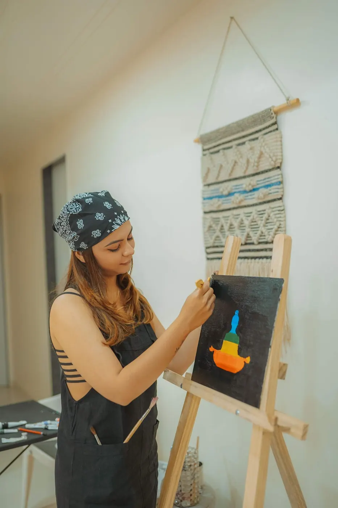
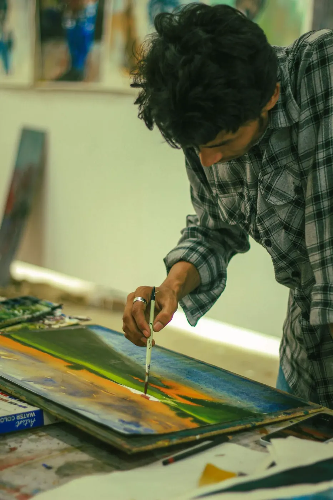
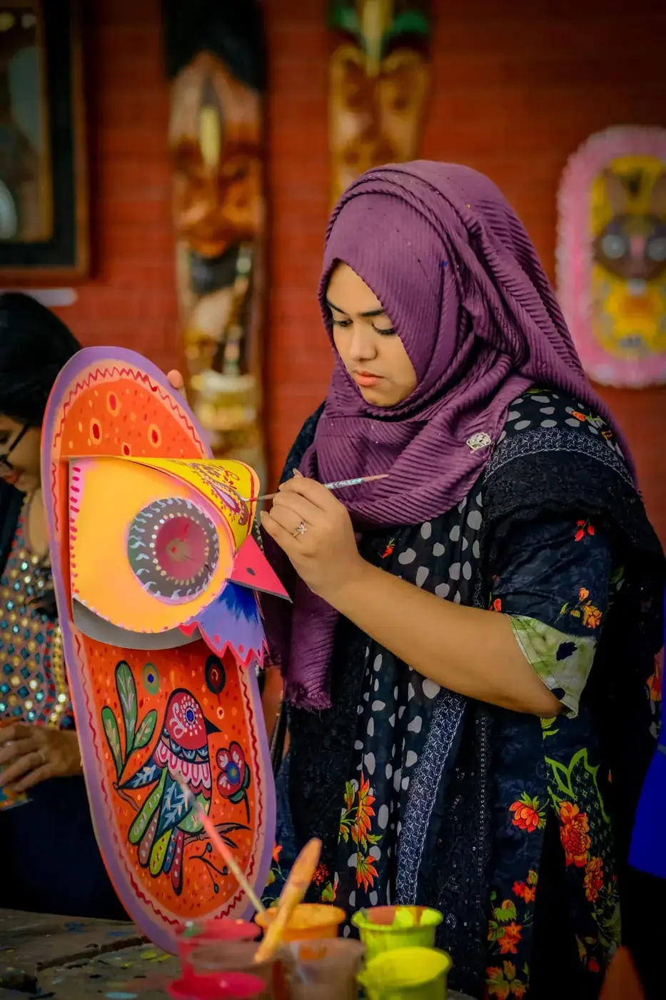
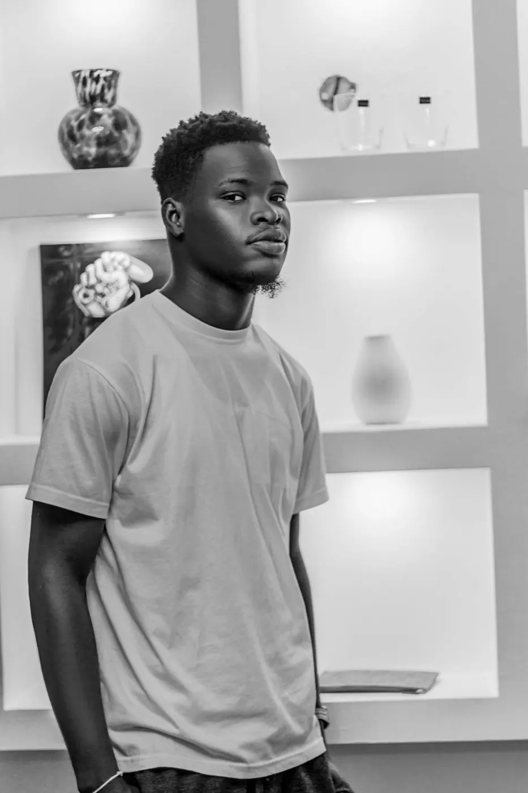
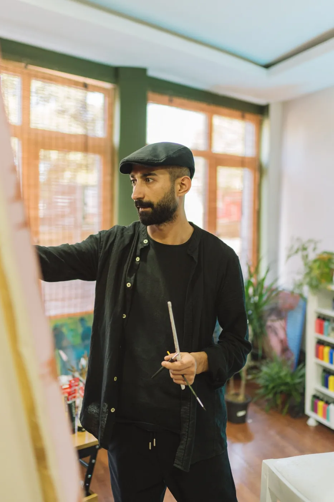
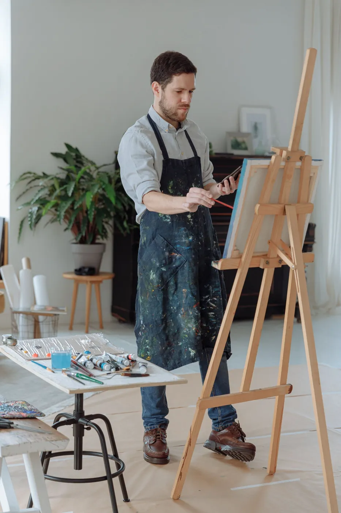
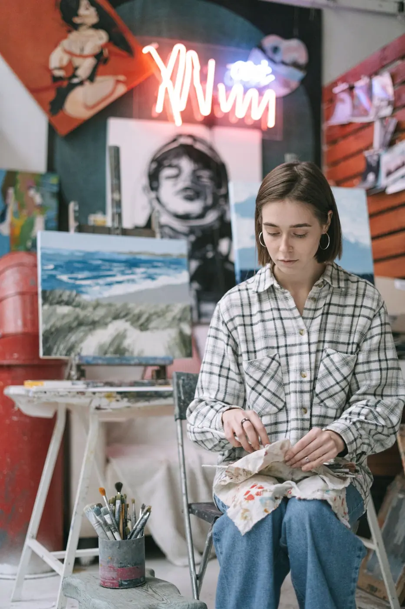
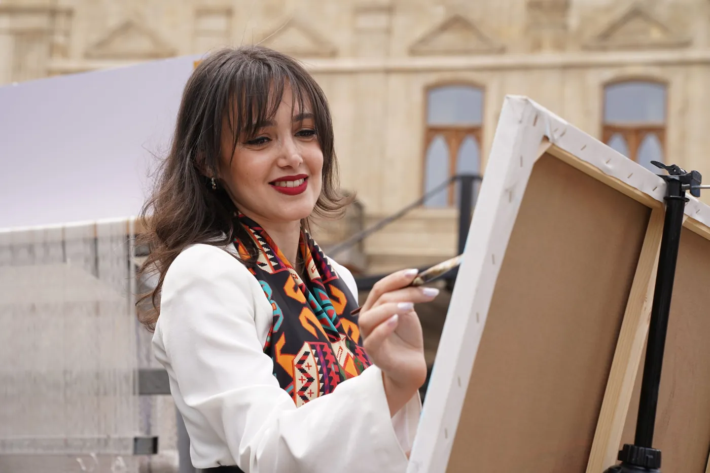

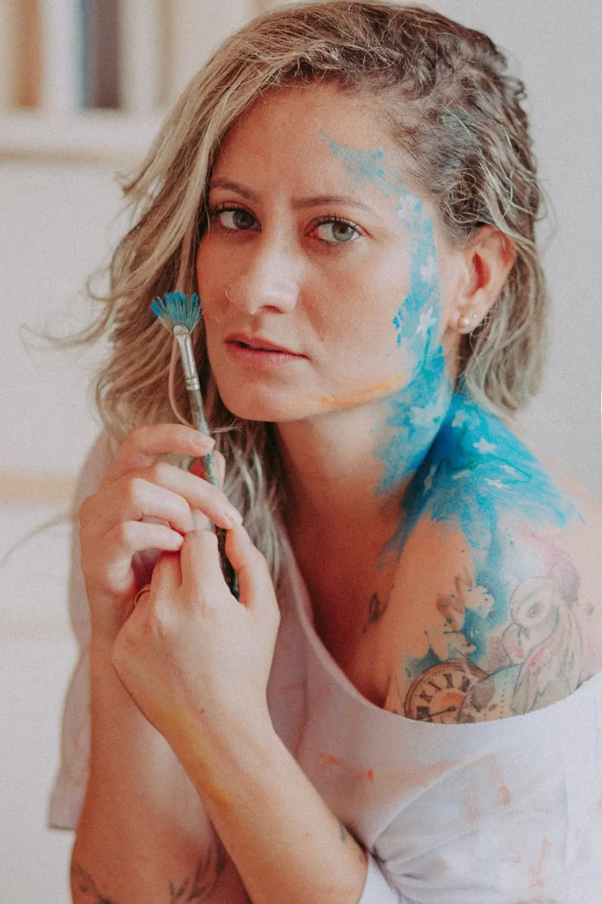
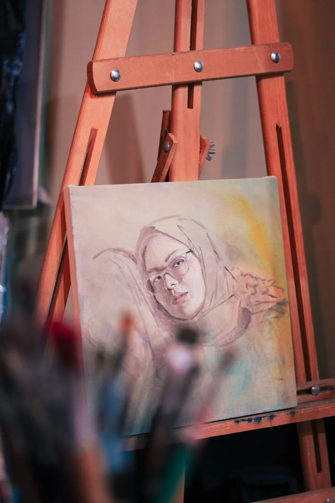
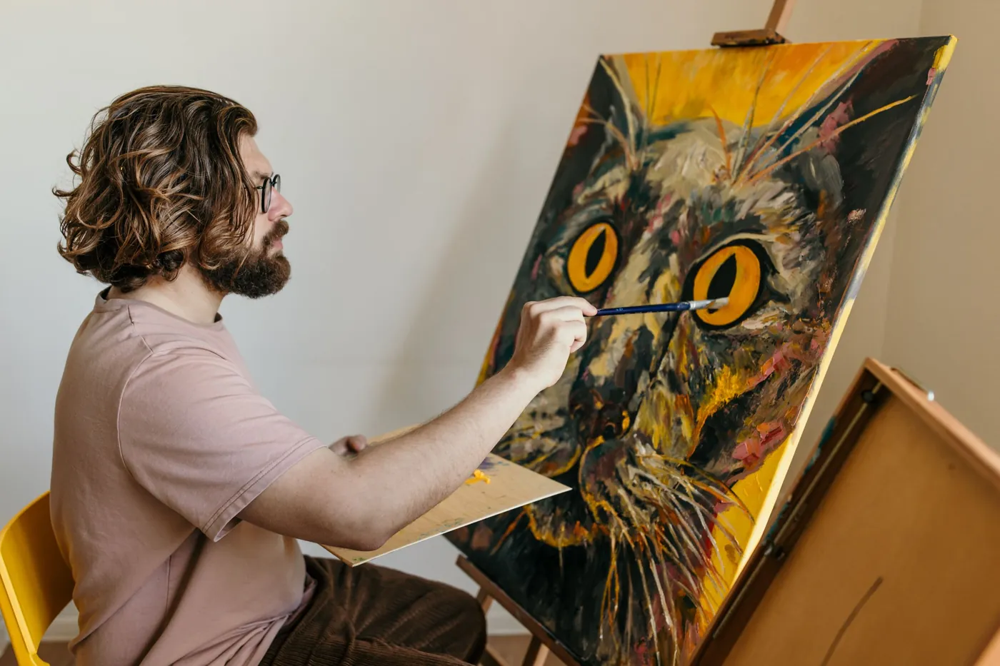
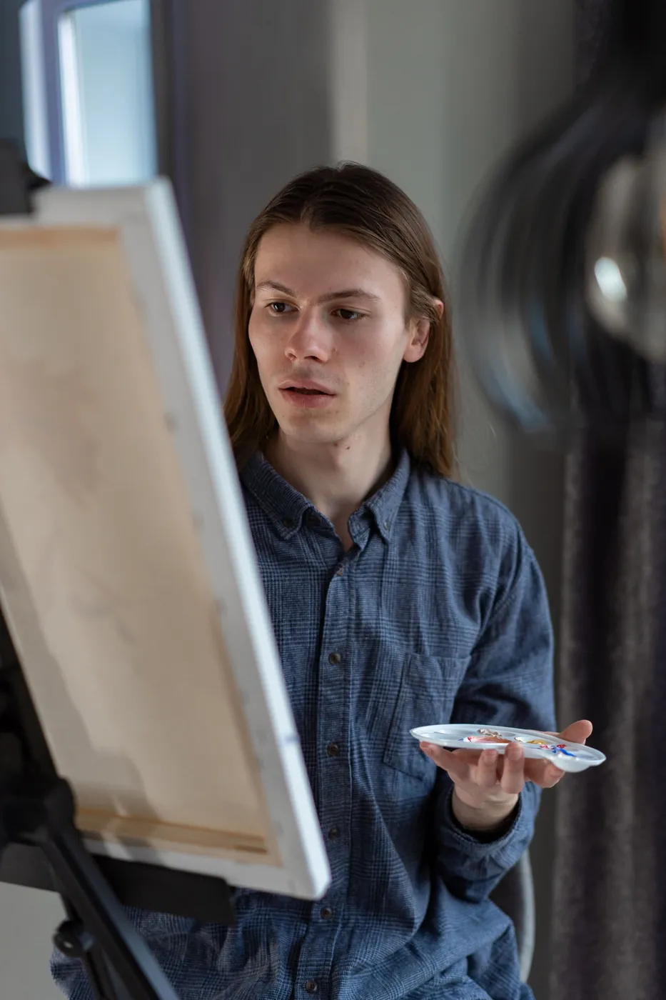
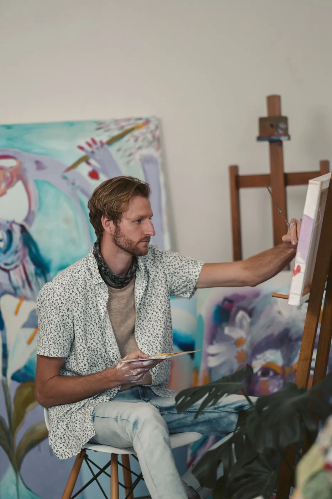
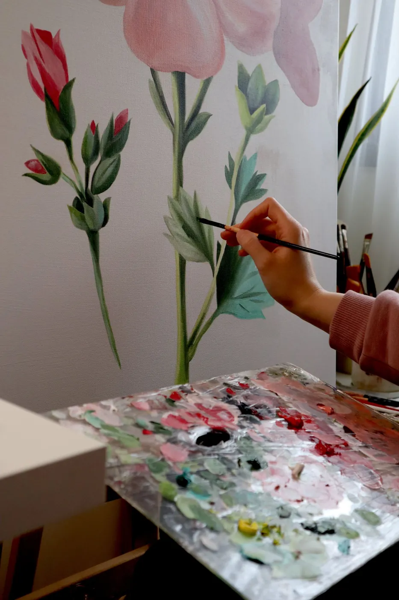
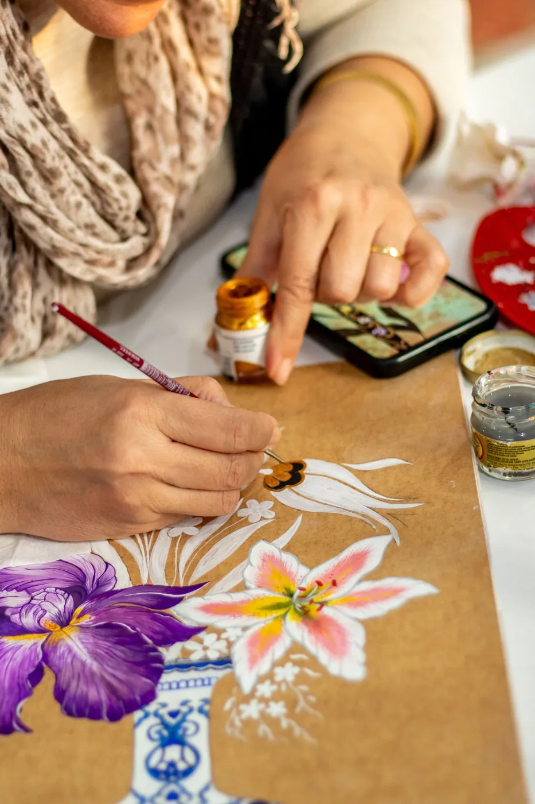
Chennai · 22 paintings
SoloMadurai · 9-metre street wall
PublicBengaluru · Booth B-14
FairShortlisted · Halftone Sun
Award“The mural turned a plain stairwell into the first thing every guest talks about. The weekly progress photos made it feel like we were painting it too.”JM
“Her colour sense is uncanny. She heard ‘calm but not boring’ and delivered a canvas we still stare at every morning.”PS
“Fixed price, honest timeline, and a signed print arrived wrapped like a gift. We’ve already booked phase two.”SK
Tell me about the wall, the mood, the story. You’ll get a sketch direction and a clear quote within 3 working days.